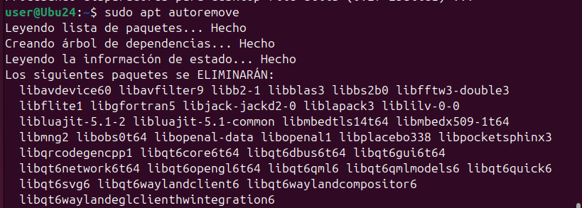

Sprint 1
Instal·lacio SO Ubuntu 24
Primer de tot, configurem la màquina virtual.
En aquest cas, s'ha utilitzat les següents especificacions.

Per poder posar la xarxa NAT, primer creem una xarxa.

I creem una xarxa amb un nom.

Escollim instal·lació manual.

Posem les diferents particions que necessitem.
En aquest cas s'ha triat 5 GB de swap, ja que podria ser que la màquina es quedés sense memòria.
10 GB de home, ja que hi ha diferents usuaris que utilitzaran aquest ordinador i tota la informació que tenen es guardarà allí.
Finalment, 10 GB d'arrel, ja que sol contindrà les aplicacions necessàries dels usuaris.
Finalment, tindrem les següents especificacions de màquina quant a SO.

Configuracio Xarxa
Primer de tot, posem la configuració manual des de paràmetres.
I comprovem que funciona.


Per poder canviar la IP de forma manual des dels arxius de configuració de linux,
anem a /etc/netplan/ i modifiquem el arxiu 01-network.

Per poder aplicar els canvis, escrivim la comanda netplan apply.

I comprovem que tenim la nova IP i connexió a internet.


Punts de restauracio
TimeShift
Primer instal·lem TimeShift amb apt.
Entrem i creem una snapshot.

Podrem comprovar que se'ns ha creat una instantània amb el dia i hora de creació.

Instal·lem GParted per comprovar la restauració.
Per restaurar, escollim el snapshot i cliquem a restaurar.
Ens mostrarà els arxius que es modificaran, crearan o s'eliminaran.
Després, es reiniciarà l'ordinador.

Finalment, podem veure que gparted no esta.
BTRFS
És un sistema de volums els quals es poden fer snapshots de solament carpetes que existeixen dintre dels volums.
Gestor d'arrancada
GPT i MBR
GPT i MBR són dos sistemes de particionatge de discs.
GPT i MBR s'inicien al principi tant per a carregar el SO com per a saber on comencen i acaben les particions del disc.
MBR
Master Boot Record és el sistema de particionatge més antic dels dos.
Està utilitzat per sistemes antics, sistemes amb BIOS i Windows.
Està situat al principi del disc i conté:
- Bootloader: programa petit per a iniciar el SO.
- Taula de particions: mapa on es guarda les direccions de les particions.
Les principals característiques són:
- Sol pot tindre 4 particions primàries.
- Una de les particions primàries ha de ser activa i, per tant, contenir el SO.
- Una de les particions pot ser estesa i contenir més particions dintre.
- Màxim de 2TB per a cada partició.

GPT
GUID Partition Table és un estàndard de particions, i el més nou dels dos.
Està utilitzat per sistemes més nous amb UEFI i sistemes 64 bits, també l'utilitza Linux.
Conté:
- MBR protectiu: perquè els sistemes més antics no pensis que el disc està sense particionar i arrencar el SO.
- Header: Es guarda la informació de les particions i de recuperació.
- Entrada de cada partició.
Les principals característiques són:
- 128 particions.
- Màxim de 256TB per partició.
- La taula de particions es clona a una altra part del disc.
Instal·lació DUAL
Sempre que es fa una instal·lació dual s'instal·la primer el sistema més antic i després el més nou.
Si és una arrancada dual de Windows i Linux, primer s'instal·la Windows i després Linux per a poder tenir compatibilitat.
Si un dels dos sistemes no arranca. El més segur és que el sistema nou ha esborrat el gestor d'arrancada del primer, s'haurà de recuperar el gestor.
GRUB
GRand Unified Bootloader, és un dels gestors d'arrancada més populars per a Linux.
Serveix per a arrancar el SO des del MBR del disc.
GRUB funciona en tres etapes:
- La primera etapa es troba al MBR i apunta a la resta del GRUB per a poder carregar de forma correcta el sistema de fitxers i SO.
- La segona etapa es més complex i s'encarrega de mostrar un menú amb el SO disponibles (si hi ha un passa directament a la següent etapa) i iniciar el sistema de fitxers.
- L'última etapa, s'encarrega d'arrencar el SO, en cas de Linux, inicia el kernel i el initrd.
Restaurar GRUB
Primer de tot, esborrem la carpeta de GRUB.

Si reiniciem la màquina, podem veure que no troba el bootloader

BootRepair
Introduïm l'ISO de bootrepair i iniciem de nou la màquina. Al principi, revisarà l'estat de la màquina.
Després d'una comprovació, podrem iniciar la reparació automàtica o que ens mostri l'informació sobre l'error.
Si escollim reparació automàtica, ens donarà l'opció de pujar i visualitzar l'informe de l'error i com s'ha arreglat.

Després d'uns quants minuts, s'ha arreglat el grub. També ens mostrarà el link per visualitzar l'informe.

En aquest cas, l'informe ens mostra que ha reinstal·lat el grub.

Finalment, podrem tornar a iniciar el SO.

Super GRUB2
Introduïm l'ISO de súper GRUB2 i iniciem la màquina. Escollim l'opció d'arrancar manualment.

Seguidament, escollim que ens mostri els SO instal·lats.

I escollim Linux. En aquest cas sol està aquest SO.
Entrem a la terminal i instal·lam GRUB.
Finalment, actualitzem GRUB per a crear el seu fitxer de configuració i trobar els SO instal·lats.
Gestors de Paquets
Els gestors de paquets són software el qual automatitza el maneig de paquets per instal·lar, desinstal·lar i actualitzar software.
APT
Actualitzacions
Per actualitzar els links als repositoris, escrivim apt update.
Instal·lem els paquets actualitzats, juntament amb les dependències necessàries amb apt dist-upgrade.

Instal·lació
Per instal·lar utilitzem la comanda apt install (paquet).
Desinstal·lació
Per desinstal·lar un paquet, escrivim apt remove (paquet).
Encara que haguéssim desinstal·lat el paquet, les dependències i configuracions instal·lades continuaran a l'equip.
Si volem treure les configuracions, escrivim apt purge (paquet).

Si volem desinstal·lar les dependències, escrivim la comanda apt autoremove.
Aquesta comanda borra tots els paquets que l'equip no necessita.

Versions
Per veure la versió d'un paquet, escrivim la comanda apt-cache policy (paquet).
Pinning Packets
Aquest mètode consisteix a posar certes prioritats a diferents versions d'un paquet.
Primer mirem quina versió de paquet tenim.
En aquest cas, nmap té la versió 7.94 amb una prioritat de 500.
Per posar diferents versions, creem un nou fitxer a la carpeta.
/etc/apt/preferences.d/
Dintre del fitxer, escrivim les següents línies.
Package: (nom paquet)
Pin: version (versio)
Pin-priority: (num prioritat)
Exemple utilitzant el paquet nmap.
En pin priority, la prioritat es dona al número més baix.
Finalment, si mirem la política del paquet, podem veure que s'ha canviat la prioritat.
Arreglar Instal·lacions
Per arreglar instal·lacions, escrivim la comanda apt -f install.
Aptitude
Instal·lació
Per instal·lar amb aptitude utilitzem la comanda aptitude install (paquet).

Desinstalar
Per desinstal·lar, escrivim la comanda aptitude remove (paquet).

Si desinstal·lem un paquet amb dependències, també es desinstal·laran.
Versions
Per veure la versió dels paquets escrivim aptitude show (paquet).
DPKG
En aquest gestor de paquets, es treballa directament amb arxius .deb.
Instal·lar
Per instal·lar paquets escrivim dpkg -i (paquet).

Desinstal·lar
Per desinstal·lar, escrivim la comanda dpkg -r (paquet), igual que APT, no esborrara la configuració de l'aplicació.
Si volem desinstal·lar i esborrar la configuració, escrivim dpkg -P (paquet).
Versions
Per veure la versió del paquet instal·lat, escrivim dpkg -s (paquet).
Comprovacions
Si volem veure si tenim un paquet instal·lat, escrivim la comanda dpkg --select-selections | grep (paquet).
Si el paquet està instal·lat, ens mostrarà el nom del paquet.
Si no està instal·lat, no ens sortirà res.
Repositoris
Amb APT es poden afegir repositoris que no estiguin o versions alternatives d'aquesta.
Primer afegim la línia add-apt-repository ppa:(paquet)/(versio).

PPA és la forma en què desenvolupadors individuals i equips de distribuir el seu sistema sense estar dins d'un gestor de paquets.
Amb aquesta comanda hem afegit a la llista de repositoris el paquet, per a poder instal·lar-lo, actualitzem la llista.
En la carpeta /etc/apt/sources.list.d podrem veure que s'ha creat l'arxiu el qual té la informació del repositori.
Si fem un cat per veure l'arxiu, podrem veure que conté el tipus de paquet, el link on descarregar-ho i la clau pública.
A l'haver afegit l'arxiu el podrem instal·lar com qualsevol altre repositori d'APT.

Compilar
Es pot compilar el codi sense necessitat d'un gestor de paquets, hi ha diferents maneres, però aquestes dues són les més utilitzades.
tar.gz
Descarreguem un arxiu tar.gz i escrivim la comanda tar xvzf (arxiu).
Dependentment de cada aplicació, l'arxiu d'instal·lació serà diferent, en aquest cas executem l'arxiu Discord.
make i cmake
Descarreguem o clonem la carpeta.
Dintre de la carpeta, podrem veure un arxiu cmake.config, aquest arxiu indica com ha de compilar i instal·lar el programa a la comanda cmake.
Instal·lem make i cmake, en aquest cas, neovim també necessita el paquet gettext per compilar.
Com indica a la pàgina oficial de neovim, primer escriurem la comanda make (configuració específica).
En aquest cas, la configuració específica és opcional, ja que mostra que està fent la comanda make i poder entendre si hi ha algun error.
Finalment, escrivim la comanda make install.